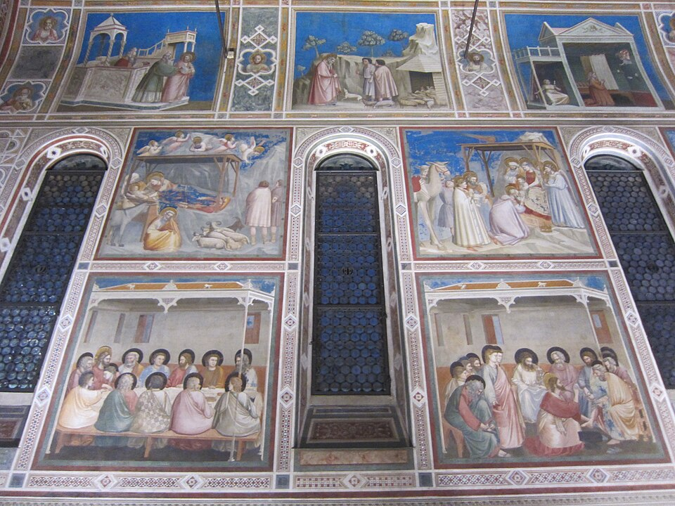

Home › Works › Scrovegni Chapel frescoes
Scrovegni Chapel frescoes
| Artist | Giotto |
|---|---|
| Date | c. 1305 |
| Type | Painting |
| Medium | Fresco |
| Location | Padua, Italy |
| Region | Europe |
| Era | Renaissance |
| Movement | Renaissance |

Giotto's cycle of the lives of Mary and Christ gave painted figures weight, emotion and space. Often seen as the start of the Italian Renaissance.